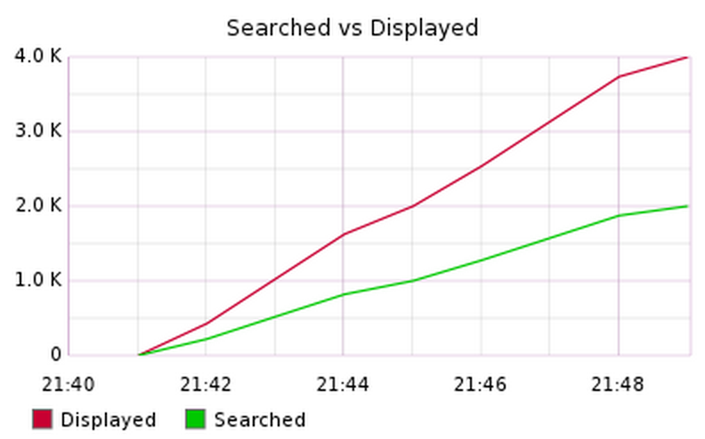
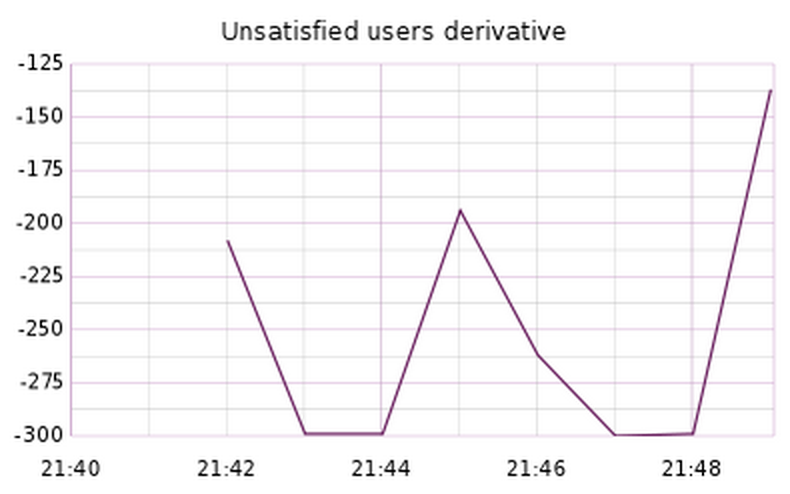

Par défault JMXTrans expose en JMX de nombreuses informations sur la machine virtuelle Java
Intéressons-nous aux métriques que vous avez créés dans les étapes précédantes : nous allons créer un dashboard personnalisé pour notre boutique en ligne.
Commencez par vous connecter à l'application web de Graphite : TODO
Cliquez sur l'onglet Dashboard
Une fois sur le dashboard vous pouvez ajouter des graphes en navigant parmis les noeuds proposés. Les statistiques JMX sont remontés dans les noeuds :
stats.cocktail.*
Configurez le rafraichissement automatique du dashboard toutes les 60 secondes en cliquant sur le bouton
Auto-Refresh en haut à droite du dashboard.

Commencez par créer un graphe basé sur le nombre de fois où la page d'accueil a été affichée en cliquant sur :
stats > cocktail > DisplayedHomeCount
Render Options > Graph TitleHome page hits
Apply Function > Special > Set Legend Name
Hits
Apply Function > Special > Color
E3D3E3)
Render Options > X-Axis > Timzone
Europe/Paris
Le graphe ainsi obtenu devrait ressembler à celui-ci :

Sauvegarder votre dashboard en cliquant sur le menu de gauche Dashboard > Save As
Entrez Cocktail
Le dashboard est maintenant sauvegardé et vous pouvez le partager, la dénomination du dashboard est présente dans l'URL.
Créer deux graphes représentant :
SearchedCocktailCount)DisplayedCocktailCount)Cliquer sur l'un des graphes et faites le glisser sur l'autre graphe.
Render Options > Graph Title
Searched vs Displayed
Apply Function > Special > Set Legend Name
Searched pour SearchedCocktailCount et Displayed pour DisplayedCocktailCount
Apply Function > Special > Color
green et red)
Render Options > X-Axis > Timzone
Europe/Paris
Le graphe ainsi obtenu devrait ressembler à celui-ci :
Sauvegarder votre dashboard en cliquant sur le menu de gauche Dashboard > Save "Cocktail"
Graph Operations > Clone
Apply Function > Calculate
> Difference
Sauvegarder votre dashboard en cliquant sur le menu de gauche Dashboard > Save "Cocktail"
Apply Function > Transform > Derivative
Render Options > Graph Title
Unsatisfied users derivative
Le graphe ainsi obtenu devrait ressembler à celui-ci :
Sauvegarder votre dashboard en cliquant sur le menu de gauche Dashboard > Save "Cocktail"
Searched vs Displayed puis Graph Operations > Clone
Graph Operations > Direct URL
Copiez-coller l'adresse ainsi obtenue dans un éditeur de texte.
&_uniq=.*
&graphType=pie&colorList=blue,green
Graphs > New Graph > From
URL
Le graphe ainsi obtenu devrait ressembler à celui-ci :
Sauvegarder votre dashboard en cliquant sur le menu de gauche Dashboard > Save "Cocktail"
stats > sales > itemsCounter
stats > sales > ordersCounter
Render Options > Graph Title
Average cocktails per commands
Apply Function > Calculate > Ratio
Apply Function > Special > Set Legend Name
Cocktails per command
Apply Function > Special > Add Valuees
To Legend Name > Average Value
Le graphe ainsi obtenu devrait ressembler à celui-ci :
Sauvegarder votre dashboard en cliquant sur le menu de gauche Dashboard > Save "Cocktail"
stats > sales >
revenueInCentsCounter
Render Options > Graphe Title
Revenue per hour
Apply Function > Special > Set Legend Name
Entrez Revenue
Render Options > X-Axis > Timzone
Europe/Paris
Apply Function > Transform > Summarize
1h
Le graphe ainsi obtenu devrait ressembler à celui-ci :
Sauvegarder votre dashboard en cliquant sur le menu de gauche Dashboard > Save "Cocktail"
Il existe d'autres fonctions très utilises dans Graphite que nous n'aborderons pas dans ce TP, mais vous pouvez y jeter un coup d'oeil par vous même :
SumSeries permet de rassembler deux métriques identiques venant de deux serveurs différents
NonNegativeDerivative permet d'ignorer les valeurs nulles, lorsque le serveur redémarre par exemple
TimeShift permet de comparer un métrique en temps réel avec le même métrique dans le passé
La liste des fonctions applicables aux métriques est consultable à cette adresse : Graphite - Functions
Il est très facile d'envoyer un graphe par email depuis le dashboard Graphite :
Graph Operations > Direct URL